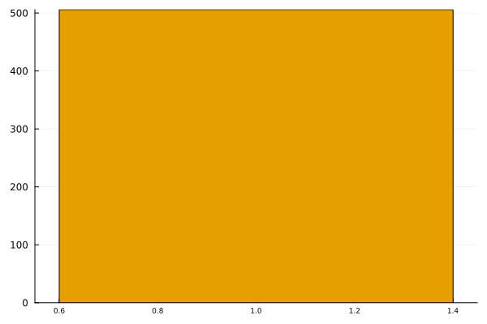
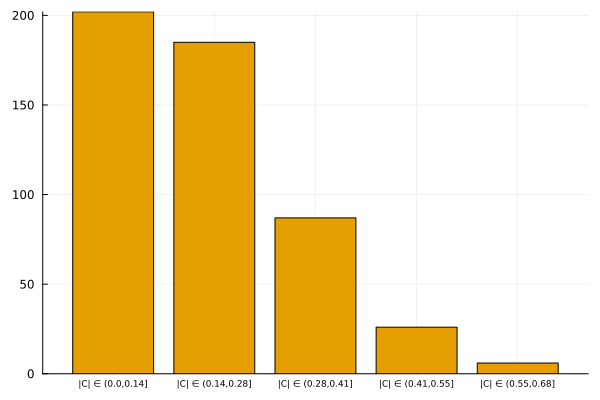
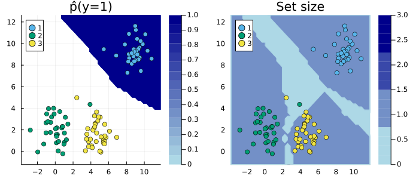
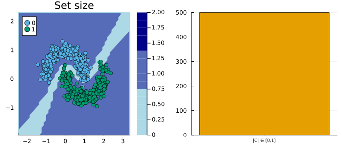

Visualization using TaijaPlotting.jl
This tutorial demonstrates how various custom plotting methods can be used to visually analyze conformal predictors.
using ConformalPrediction
using Plots, TaijaPlottingRegression
Visualizing Prediction Intervals
For conformal regressors, the TaijaPlotting.plot can be used to visualize the prediction intervals for given data points.
Univariate Input
using MLJ
X, y = make_regression(100, 1; noise=0.3)EvoTreeRegressor = @load EvoTreeRegressor pkg=EvoTrees
model = EvoTreeRegressor()
conf_model = conformal_model(model)
mach = machine(conf_model, X, y)
fit!(mach)plot(mach.model, mach.fitresult, X, y; input_var=1)
Multivariate Input
using MLJ
X, y = @load_boston
schema(X)EvoTreeRegressor = @load EvoTreeRegressor pkg=EvoTrees
model = EvoTreeRegressor()
conf_model = conformal_model(model)
mach = machine(conf_model, X, y)
fit!(mach)input_vars = [:Crim, :Age, :Tax]
nvars = length(input_vars)
plt_list = []
for input_var in input_vars
plt = plot(mach.model, mach.fitresult, X, y; input_var=input_var, title=input_var)
push!(plt_list, plt)
end
plot(plt_list..., layout=(1,nvars), size=(nvars*200, 200))
Visualizing Set Size
To visualize the set size distribution, the TaijaPlotting.bar can be used. For regression models, the prediction interval widths are stratified into discrete bins.
bar(mach.model, mach.fitresult, X)
EvoTreeRegressor = @load EvoTreeRegressor pkg=EvoTrees
model = EvoTreeRegressor()
conf_model = conformal_model(model, method=:jackknife_plus)
mach = machine(conf_model, X, y)
fit!(mach)bar(mach.model, mach.fitresult, X)
Classification
KNNClassifier = @load KNNClassifier pkg=NearestNeighborModels
model = KNNClassifier(;K=3)Visualizing Predictions
Stacked Area Charts
Stacked area charts can be used to visualize prediction sets for any conformal classifier.
using MLJ
n_input = 4
X, y = make_blobs(100, n_input)conf_model = conformal_model(model)
mach = machine(conf_model, X, y)
fit!(mach)plt_list = []
for i in 1:n_input
plt = areaplot(mach.model, mach.fitresult, X, y; input_var=i, title="Input $i")
push!(plt_list, plt)
end
plot(plt_list..., size=(220*n_input,200), layout=(1, n_input))
Contour Plots for Two-Dimensional Inputs
For conformal classifiers with exactly two input variables, the TaijaPlotting.contourf method can be used to visualize conformal predictions in the two-dimensional feature space.
using MLJ
X, y = make_blobs(100, 2)conf_model = conformal_model(model)
mach = machine(conf_model, X, y)
fit!(mach)p1 = contourf(mach.model, mach.fitresult, X, y)
p2 = contourf(mach.model, mach.fitresult, X, y; plot_set_size=true)
plot(p1, p2, size=(700,300))
Visualizing Set Size
To visualize the set size distribution, the TaijaPlotting.bar can be used. Recall that for more adaptive predictors the distribution of set sizes is typically spread out more widely, which reflects that “the procedure is effectively distinguishing between easy and hard inputs” (Angelopoulos and Bates 2021). This is desirable: when for a given sample it is difficult to make predictions, this should be reflected in the set size (or interval width in the regression case). Since ‘difficult’ lies on some spectrum that ranges from ‘very easy’ to ‘very difficult’ the set size should vary across the spectrum of ‘empty set’ to ‘all labels included’.
X, y = make_moons(500; noise=0.15)
KNNClassifier = @load KNNClassifier pkg=NearestNeighborModels
model = KNNClassifier(;K=50) conf_model = conformal_model(model)
mach = machine(conf_model, X, y)
fit!(mach)p1 = contourf(mach.model, mach.fitresult, X, y; plot_set_size=true)
p2 = bar(mach.model, mach.fitresult, X)
plot(p1, p2, size=(700,300))
conf_model = conformal_model(model, method=:adaptive_inductive)
mach = machine(conf_model, X, y)
fit!(mach)p1 = contourf(mach.model, mach.fitresult, X, y; plot_set_size=true)
p2 = bar(mach.model, mach.fitresult, X)
plot(p1, p2, size=(700,300))
Angelopoulos, Anastasios N., and Stephen Bates. 2021. “A Gentle Introduction to Conformal Prediction and Distribution-Free Uncertainty Quantification.” https://arxiv.org/abs/2107.07511.